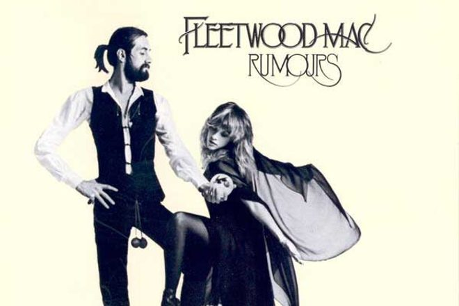

Rumours by Fleetwood Mac

Ingredients
- Frenzied Decadent Vibe
- Catchy Exposes
- A musical Soap Opera
Steps
- Set the tone with the mesmorising Dreams
- Throw in a pinch of one of the most recognisable songs of all time Go your own way
- Slowly mix in the bass riff of The chain
- Serve with the humongous chorus of Gold Dust Woman
Back to the index...